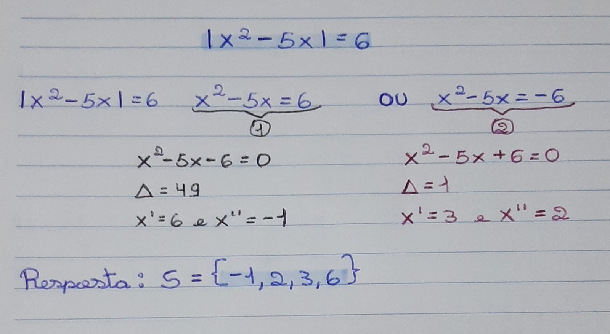
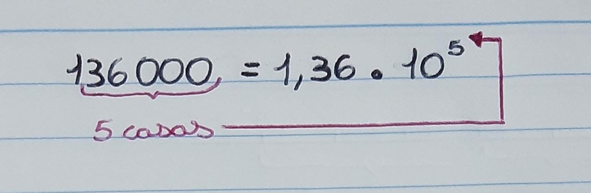
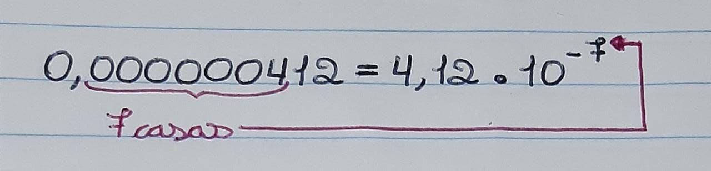
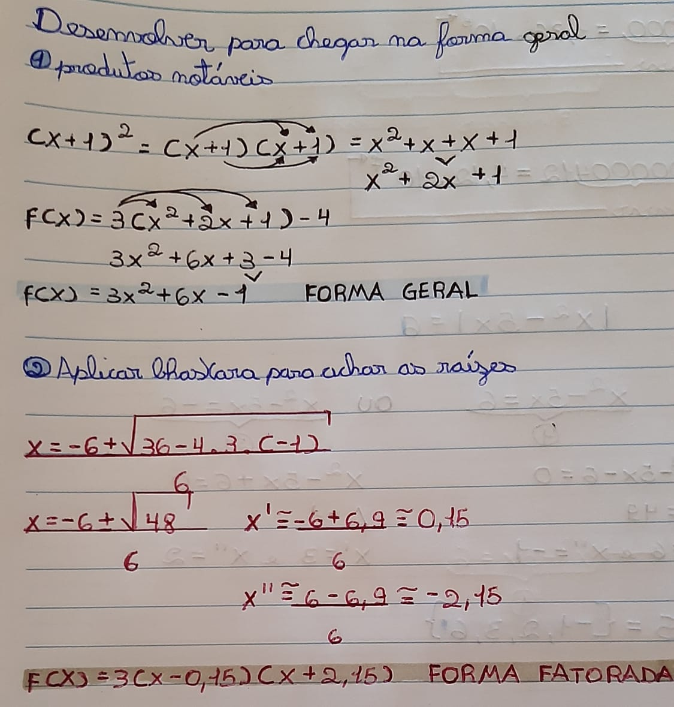

FACILIDADES
DIFICULDADES
A função modular é uma função cuja lei de formação possui uma variável dentro do módulo. O módulo de um número n é representado por |n|, em que nesse número é desconsiderado o seu sinal, já que sabemos que |n| tem como resultado sempre um número positivo.
O modulo ou valor absoluto de um número, é considerado igual a n se n > 0 e igual a -n se n < 0. Por exemplo:
|2| = 2, porque, neste caso, n = 2 e 2 ≥ 0;
|0| = 0, porque, nesse caso, n = 0;
|-2| = -(-2) = 2, por que n = -2 e -2 ≤ 0.
Resumindo, podemos escrever:
|n| = n, se n ≥ 0
|n| = -n, se n ≤ 0
O jeito mais fácil de fazer é resolver o que está dentro do modulo, e fazer uma parábola no gráfico com as respostas. Com isso, a parte negativa deve ser refletida para a parte positiva do eixo y, ficando como se fosse um M virado. Depois deve somar a parte de fora do modulo. Quanto maior a parte formada, mais para cima no eixo y irá. Mesma coisa com o negativo, indo para a parte de baixo.
Geometricamente, o modulo de um número indica, na reta real, a distância desse número ao zero.
Distancia de 2 ao 0: 2 unidades, |2| = 2
Distância de -3 ao 0: 3
unidades, |-3| = 3
Em uma função modular, temos uma conta em modulo e uma resposta. Para que se possa resolver, é preciso transformá-la em duas contas, sendo que em uma o resultado é positivo, e no outro negativo. Assim, teremos duas respostas possíveis para a incógnita.
EXEMPLO: Resolver a equação | x2 - 5x | = 6
Sobre minha Realização
Escolhi esse tópico para meu portifolio pois foi um conteúdo que realmente gostei de aprender, não encontrei dificuldades ao longo das explicações e nem na realizações dos exercícios e atividades propostas. Assim, posso dizer que entendi tudo que precisava sobre esse assunto.
A notação científica permite escrever números usando potências de 10. Sua principal utilidade é a de fornecer, num relance, a idéia da ordem de grandeza de um número que, se fosse escrito po extenso, não daria essa informação de modo tão imediato.
Um número está expresso em notação científica se está escrito com o produto de dois números reias: um número real pertence ao intervalo [1, 10) e uma potência de 10.
O expoente do dez indica o número de vezes que devemos deslocar a vírgula para a direita.
O expoente negativo do dez indica o número de vezes que devemos delocar a vírgula para a esquerda.
Veja, algumas grandezas físicas expressas em notação científica:
Sobre minha Realização
Esse foi outro assunto que consegui compreender facilmente. Não foi um conteúdo novo, então consigo realizar as atividades sem apresentar nenhuma dificuldade. Além de ser algo que aprecio, não sendo demasiadamente cansativo para mim.
Com o propósito de simplificar cálculos, o escocês John Naiper criou os logaritmos, cujos princípios básicos são: transformar uma multiplicação em adição ou uma divisão em subtração, pois adicionar ou subtrair números é, normalmente, mais rápido que multiplicar ou dividir.
A ideia de Napier era relativamente simples: representa-se números positivos como potências de mesmo número; por exemplo, cada linha da tabela abaixo apresenta o número e sua representação como potência de base 10.
| Número | Potência de dez |
|---|---|
| 1,78098 | 100,25064 |
| 1,82881 | 100,26217 |
| 3,25694 | 100,51281 |
| 5,80029 | 100,76345 |
Por exemplo, na primeira linha, temos: 1,78090 = 100,25064. A partir dessa tabala, pode-se calcular:
3,25694 . 1,78090 = 100,25064 . 100,25064 = 100,51281 + 0,25064 = 100,76345 = 5,80029
Note que o produto foi calculado a partir da soma dos expoentes das potências de 10.
A base dessa foi sugerida a Naiper por Henry Briggs, que publicou em 1617 a primeira tabela de logaritmos.
Sejam a e b números reais positivos e b ≠ 1. Chama-se logaritmo de a na base b o expoente x tal que bx = a.
Em símbolos: logba = x ⇌ bx = a
Na sua sentença logba = x:
a é chamado de logaritmo
b é chamada de base do logaritmo
x é chamado de logaritmo de a na base b
Consequência da definição dos logaritmos
Sobre minha Realização
Por mais que tenha sido um assunto ainda não finalizado em nossas aulas, ele está sendo apresentado com uma de minhas dificuldades por ser um conteúdo com grande complexidade, que está relacionado com a função exponenciais, vista anteriormente, já que são duas funções inversas. Creio que após a execução de mais exercícios, e buscando sobre esse contúdo na internet, consegui entender e resolver minhas pequenas dúvidas.
Podemos escrever as Funções de 2º Grau das seguintes formas:
| Forma | Equação | Função |
|---|---|---|
| Forma Geral | ax² + bx + c = 0 | f(x) = ax² + bx + c Sendo o ponto (0,c) a interseção da parábola com o eixo y |
| Forma Canônica | a(x - xv)² + yv = 0 | f(x) = a(x - xv)² + yv Sendo o ponto (yv, xv) o vértice da parábola. |
| Forma Fatorada | a(x - x1)(x - x2) = 0 | f(x) = a(x - x1)(x - x2) = 0 Sendo x1 e x2 as raízes. |
E para convertê-las entre si, utilizamos estes métodos:
| Para transformar: | O que fazer? |
|---|---|
| Forma Canônica / Forma Fatorada → Forma Geral | Realizar as multiplicações e potências, ou seja, expandir a expressão algébrica. |
| Forma Geral → Forma Canônica | Processo de completar quadrados ou encontrar o vértice da parábola e posicionar os valores conforme o modelo genérico. |
| Forma Geral → Forma Fatorada | Encontrar as raízes da função e posicionar os valores conforme o modelo genérico. |
EXEMPLO: Encontre a forma geral e fatorada da função f(x) = 3 ( x + 1 )2 - 4
Sobre minha Realização
Acredito que esse tenha sido o conteúdo que encontrei mais dificuldade ao realizar. Por mais que sejam apenas outras formas de escrever as Funções de 2º Grau, isso acabava me confundindo ao decorrer dos exercícios, pois as vezes por falta de atenção, eu acabava trocando o método que deveria ser utilizado em determinada forma. Para solucionar isso, busquei refazer exemplos dados em aula, pois encontrei nesse modo uma forma em que consigo compreender em passos a resolução.